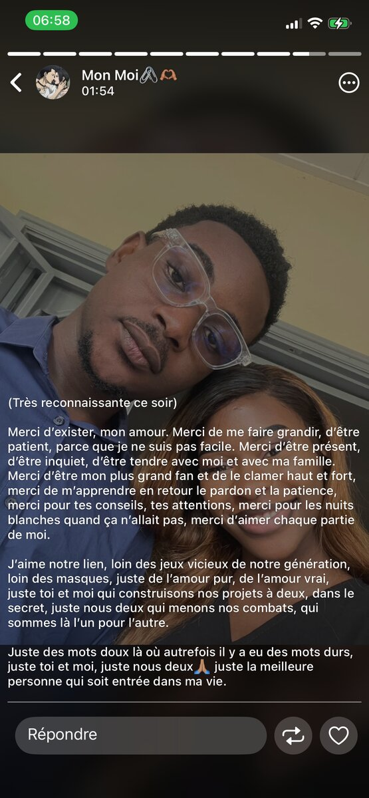

Un An
La suite que nous avons choisi d'écrire, ensemble.
Mon amour,
Il y a un an, je te posais une question. Une seule.
Aujourd'hui, un an plus tard, je n'ai qu'une chose à te dire :
merci d'avoir dit oui.
Douze mois se sont écoulés, et pourtant j'ai l'impression que chacun d'eux
nous a appris un peu plus qui nous sommes, toi et moi. Pas la version
parfaite qu'on montre au début, mais la vraie. Celle qui a des matins
fatigués, des silences, des doutes parfois — et qui choisit quand même
de rester.

J'ai appris la patience à travers toi, et je crois t'en avoir appris un
peu aussi. On s'est trompés, on s'est excusés, on a recommencé.
C'est peut-être ça, aimer vraiment :
continuer à choisir l'autre, même les jours où ce serait plus simple de
ne pas le faire.
Loin des jeux et des masques que tout le monde porte autour de nous,
on a construit quelque chose de plus tranquille. Un endroit rien qu'à
nous, où les mots durs ont fini par laisser place à des mots doux.
Où être fatigué, être soi, être maladroit — ce n'est jamais un problème.

Je me souviens de cette soirée où nos mains se sont trouvées sous la
table, dans une lumière presque violette, sans qu'on ait besoin de se
le dire. C'est resté l'un de mes souvenirs préférés de cette année :
pas un grand discours, juste ta main dans la mienne.
une petite capsule de nous, avant de continuer à lire
Un an, ce n'est pas une fin de chapitre. C'est juste la preuve que le
premier n'était pas un coup de chance. Que ce qu'on a construit tient
debout, même face au temps, même face à la distance, même face à nous-mêmes
parfois.
Alors merci d'exister dans ma vie, Désirée.
Merci d'être mon évidence, jour après jour.
Je t'aime, aujourd'hui encore plus qu'hier.
— Bon anniversaire, mon amour. À nous, encore et toujours ❤️